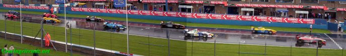

| Year | Driver | Nat. | Team | Car |
| 2004 | N.Pastorelli | Draco Junior Team | Lola T99/50 - Zytek | |
| 2003 | A.Farfus | Draco Junior Team | Lola T99/50 - Zytek | |
| 2002 | J.Melo Jr. | Great Wall | Lola T99/50 - Zytek | |
| 2001 | F.Massa | Draco Junior Team | Lola T96/50 - Zytek |
FORMULA 3000 PRO SERIES

DRIVERS CHAMPIONSHIP (EURO 3000)
| Year | Driver | Nat. | Team | Car |
| 2004 | N.Pastorelli | Draco Junior Team | Lola T99/50 - Zytek | |
| 2003 | A.Farfus | Draco Junior Team | Lola T99/50 - Zytek | |
| 2002 | J.Melo Jr. | Great Wall | Lola T99/50 - Zytek | |
| 2001 | F.Massa | Draco Junior Team | Lola T96/50 - Zytek |
* Evolved from the Italian Formula 3000 Championship